/ HALion Developer Resource / HALion Tutorials & Guidelines / Tutorials /
Creating a Modulation Matrix
On this page:
- Example VST Preset
- Prerequisites
- Workflow Overview
- Adding More Destinations
- Adding an Additional Source
- Increasing the Number of Rows in the Modulation Matrix
- Adding User Envelope Destinations
- Final Example VST Preset
- How the Elements Interact
- Modulation Matrix Examples for Different Zone Types
- Transferring the Modulation Matrix to Your Instrument
- Modulation Matrix with Custom Look
HALion offers a wealth of modulation sources and destinations. When creating an instrument, it is recommended to limit the selection of modulation sources and destinations to those that are required by the instrument. This tutorial describes how to create and customize a modulation matrix using a Template List. The modulation matrix in this tutorial has a configurable number of rows and uses a subset of the available modulation sources and destinations. The number of rows and the selection of modulation sources and destinations are defined in UI and MIDI scripts, respectively. The menus for modulation sources and destinations use definable Custom Multi Level Menus. Only the defined modulation sources and destinations appear on the menus.
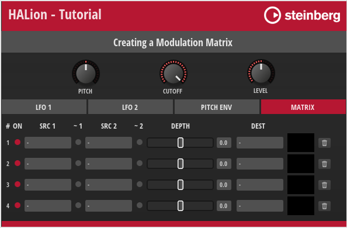
The macro page provides controls for the destinations Pitch, Cutoff, and Level. Page tabs provide access to the controls of the sources LFO 1, LFO 2, and Pitch Env and to the modulation matrix. You can assign sources and destinations using the menus in the modulation matrix or by dragging the page tab of a source to a destination.
When using drag and drop, the next available row in the modulation matrix will be used for the modulation assignment. If no free rows are available, sources cannot be assigned via drag and drop. If this is the case, an icon is shown in the header of the source tab.
Example VST Preset
The modulation matrix in this example uses both UI and MIDI script functionality. The corresponding scripts are provided, but not explained in detail line by line. Instead, the connections and interactions between the UI elements and the UI and MIDI scripts are explained so that you can adjust the number of rows and customize the look of the modulation matrix without the risk of introducing errors. See How the Elements Interact.
The following section describes how to access Templates and edit UI and MIDI scripts.
To explore the templates in this example:
- Open the Macro Page Designer, go to the Templates Tree and select the template that you want to explore.
- Click Edit Element
 to examine the template.
to examine the template.
To edit the UI script:
- Open the Macro Page Designer and select the topmost element in the GUI Tree.
- Go to the Properties section and click Edit Script to open the internal script editor.
To edit the MIDI script:
- In the Program Tree, select the Mod Matrix MIDI Module.
- Go to the Sound editor and click Edit Script to open the internal script editor.
The instructions that follow use the internal script editor.
Prerequisites
- You have an instrument with a macro page.
- You have loaded both the preset Creating a Modulation Matrix 01.vstpreset and your instrument in HALion.
Workflow Overview
- Add Resonance and Pan as additional destinations and the user envelope as an additional source.
- Implement the drag and drop functionality to assign the additional destinations and source.
- Add the additional destinations and source to the modulation matrix menus and the associated UI and MIDI scripts.
- Increase the number of rows in the modulation matrix.
- Add the parameters of the user envelope as destinations to the modulation matrix menus and the associated MIDI script.
- Copy the templates and resources from the Example VST Preset to your macro page.
- Copy the code of the UI and MIDI scripts from the Example VST Preset into the corresponding scripts of your instrument.
- Change the look of the modulation matrix to match the look of your instrument.
Adding More Destinations
At the top of the macro page are the Pitch, Cutoff, and Level controls, which also serve as destinations (drop targets) for modulation sources. Let's add Resonance and Pan as additional destinations (drop targets).
Adding the Resonance Control and Drop Target
- In the Macro Page Designer, go to the GUI Tree and navigate to the Upper branch.
- Move the Cutoff group to Position X = 75.
Properties
| Property | Value |
|---|---|
| Position X | 75 |
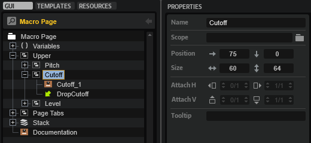
- Duplicate the Cutoff group, then rename the duplicate to "Resonance" and set its Position X to 150.
Properties
| Property | Value |
|---|---|
| Name | Resonance |
| Position X | 150 |
| Position Y | 0 |
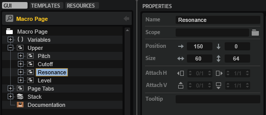
- In the new Resonance group, rename the knob template to "Resonance_1" and set its template parameters as follows:
Properties
| Property | Value |
|---|---|
| Name | Resonance_1 |
Template Parameters
| Template Parameter | Value |
|---|---|
| Value | @0:Layer/@0:Zone/@id:140003 |
| Label | RESONANCE |
| Unit |
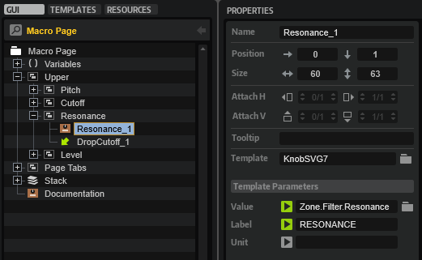
This connects the knob to the Resonance parameter of the zone. The Unit parameter is not used.
- Rename the Drop control to "DropResonance" and set its Value to "@DropResonance".
Properties
| Property | Value |
|---|---|
| Name | DropResonance |
| Value | @DropResonance |
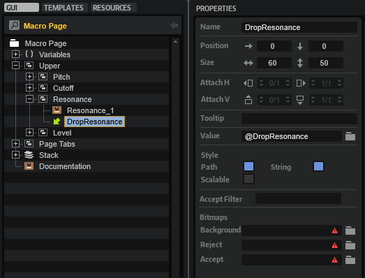
The UI script uses the @DropResonance UI variable to resolve the source that is being dropped.
Adding the Pan Control and Drop Target
The following steps are almost identical to the previous ones, except that a different knob template is used in step 4.
- In the Macro Page Designer, go to the GUI Tree and navigate to the Upper branch.
- Move the Level group to Position X = 225.
Properties
| Property | Value |
|---|---|
| Position X | 225 |
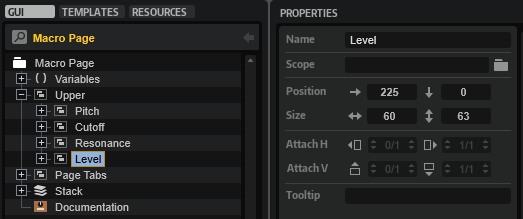
- Duplicate the Level group, then rename the duplicate to "Pan" and set its Position X to 300.
Properties
| Property | Value |
|---|---|
| Name | Pan |
| Position X | 300 |
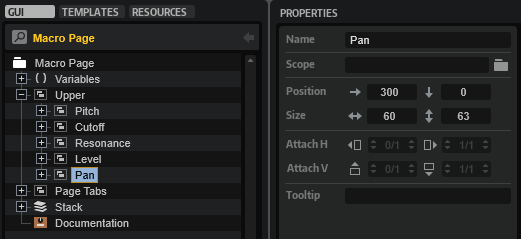
- In the new Pan group, rename the knob template to "Pan_1", change its template reference to "KnobSVG7_Bi" and set its template parameters as follows:
Properties
| Property | Value |
|---|---|
| Name | Pan_1 |
| Template | KnobSVG7_Bi |
Template Parameters
| Template Parameter | Value |
|---|---|
| Value | @0:Layer/@0:Zone/@id:320014 |
| Label | PAN |
| Unit |
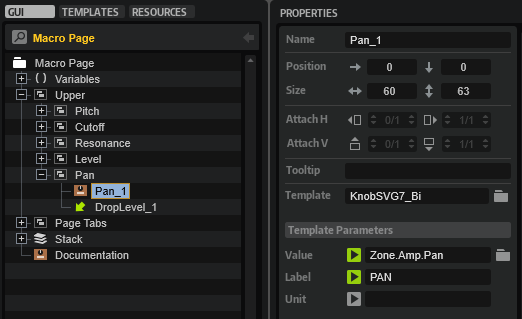
This connects the knob to the Pan parameter of the zone. The Unit parameter is not used.
- Rename the Drop control to "DropPan" and set its Value to "@DropPan".
Properties
| Property | Value |
|---|---|
| Name | DropPan |
| Value | @DropPan |
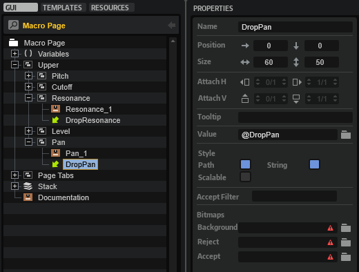
The UI script uses the @DropPan UI variable to resolve the source that is being dropped.
Adding the Drop Targets to the UI Script
Now, you need to define the DropResonance and DropPan parameters in the UI script.
- Open the UI script in the internal script editor and replace the following lines
defineParameter("DropPitch", nil, "", function() addModRow(DropPitch, 2) end)
defineParameter("DropCutoff", nil, "", function() addModRow(DropCutoff, 3) end)
defineParameter("DropLevel", nil, "", function() addModRow(DropLevel, 5) end)
with these lines:
defineParameter("DropPitch", nil, "", function() addModRow(DropPitch, 2) end)
defineParameter("DropCutoff", nil, "", function() addModRow(DropCutoff, 3) end)
defineParameter("DropResonance", nil, "", function() addModRow(DropResonance, 4) end)
defineParameter("DropLevel", nil, "", function() addModRow(DropLevel, 6) end)
defineParameter("DropPan", nil, "", function() addModRow(DropPan, 8) end)
Each destination/drop target has its own parameter. When a source is dropped on a destination/drop target, the parameter's change callback calls addModRow with the string provided by the Drag Info property as the first argument. For more information about the Drag Info property, see Drag Group. The second argument is the index of the destination as defined in the MIDI script. See Adding Resonance and Pan to the MIDI Script. The two arguments are used to create the assignment in the next available row of the modulation matrix.
Adding Resonance and Pan to the MIDI Script
You must add Resonance and Pan to the destinations table in the MIDI script. Otherwise, the assignment will not be correct when you drop a source on the newly added destinations.
- Go to the Program Tree and select the Mod Matrix MIDI Module.
- Open the MIDI script in the internal script editor and add the lines that are marked with a comment.
destinations = {
{ name = "-" , dest = ModulationDestination.unassigned },
{ name = "Pitch" , dest = ModulationDestination.pitch },
{ name = "Cutoff" , dest = ModulationDestination.cutoff },
{ name = "Resonance" , dest = ModulationDestination.resonance }, -- Add this line.
{ name = "Level" , dest = ModulationDestination.level },
{ name = "Volume 1" , dest = ModulationDestination.volume1 },
{ name = "Volume 2" , dest = ModulationDestination.volume1 },
{ name = "Pan" , dest = ModulationDestination.pan }, -- Add this line.
{ name = "LFO 1 Frequency" , dest = ModulationDestination.lfo1Freq },
{ name = "LFO 1 Shape" , dest = ModulationDestination.lfo1Shape },
{ name = "LFO 2 Frequency" , dest = ModulationDestination.lfo2Freq },
{ name = "LFO 2 Shape" , dest = ModulationDestination.lfo2Shape },
{ name = "Pitch Env Init Level" , dest = ModulationDestination.pitchEnvStartLev },
{ name = "Pitch Env Attack" , dest = ModulationDestination.pitchEnvAttack },
{ name = "Pitch Env Att Level" , dest = ModulationDestination.pitchEnvAttLev },
{ name = "Pitch Env Decay" , dest = ModulationDestination.pitchEnvDecay },
{ name = "Pitch Env Sustain" , dest = ModulationDestination.pitchEnvSustain },
{ name = "Pitch Env Release" , dest = ModulationDestination.pitchEnvRelease },
{ name = "Pitch Env Rel Level" , dest = ModulationDestination.pitchEnvRelLev },
}
Adding Resonance and Pan to the Destination Menu
To make Resonance and Pan selectable in the modulation matrix, you must add them to the MenuDestRoot template. The MenuDestRoot template is a Custom Multi Level Menu with a MenuEntry template for each destination. The MenuDestRoot template pops up when you click the DestinationMenu template. The DestinationMenu template is part of the MatrixRow template which is part of the Template List that creates the rows and controls for the modulation matrix.
A destination is selected via the UI variable @MenuValue. MenuValue is a script parameter defined in the UI script of the MenuDestRoot template. Basically, MenuValue is a variable for the selected destination. It is exported and set by the Destination template parameter of the Template List that creates the modulation matrix. MenuValue is also connected to the exclusive switch and the Label control within the MenuEntry template. The exclusive switch controls whether an entry is displayed as selected or not, and the Label control displays the name of the selected destination.
The OnValue of the MenuEntry template corresponds to the index in the destinations table as previously defined in the MIDI script. However, the index of OnValue starts at zero. Therefore, OnValue is always one number below the index of the corresponding destination in the destinations table.
Together, MenuValue and OnValue control which destination is selected and displayed.
Editing the MenuDestRoot Template
- Go to the Templates Tree, navigate to library > Tutorial Controls > Popup > MenuDestRoot and edit the template.
- Select the Level template and set its properties and template parameters as follows:
Properties
| Property | Value |
|---|---|
| Position X | 0 |
| Position Y | 76 |
Template Parameters
| Template Parameter | Value |
|---|---|
| OnValue | 4 |
| Value | @MenuValue |
| Label | Level |
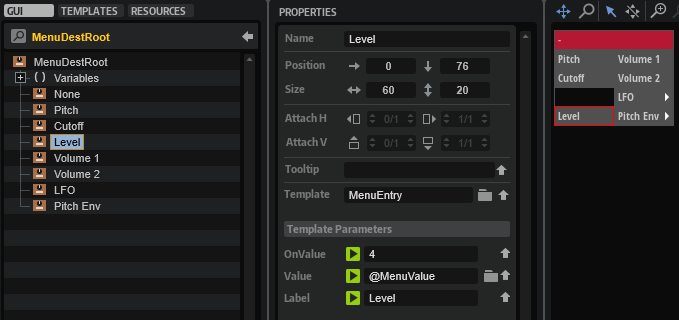
- Select the Cutoff template and duplicate it, then rename the duplicate to "Resonance" and set its properties and template parameters as follows:
Properties
| Property | Value |
|---|---|
| Name | Resonance |
| Position X | 0 |
| Position Y | 57 |
Template Parameters
| Template Parameter | Value |
|---|---|
| OnValue | 3 |
| Value | @MenuValue |
| Label | Resonance |
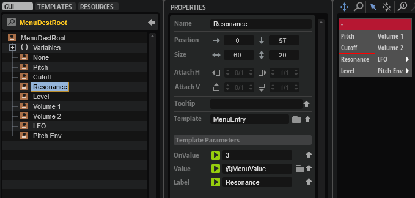
- Duplicate the Level template, then rename the duplicate to "Pan" and set its properties and template parameters as follows:
Properties
| Property | Value |
|---|---|
| Name | Pan |
| Position X | 0 |
| Position Y | 95 |
Template Parameters
| Template Parameter | Value |
|---|---|
| OnValue | 7 |
| Value | @MenuValue |
| Label | Pan |
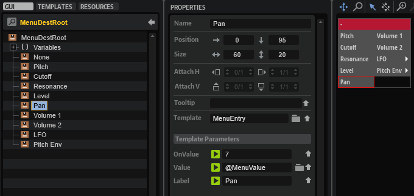
- Select the Volume 1 template and set its OnValue to 5.
Template Parameters
| Template Parameter | Value |
|---|---|
| OnValue | 5 |
| Value | @MenuValue |
| Label | Volume 1 |
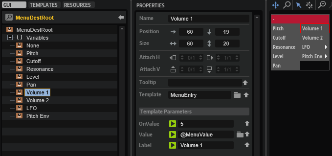
- Select the Volume 2 template and set its OnValue to 6.
Template Parameters
| Template Parameter | Value |
|---|---|
| OnValue | 6 |
| Value | @MenuValue |
| Label | Volume 2 |
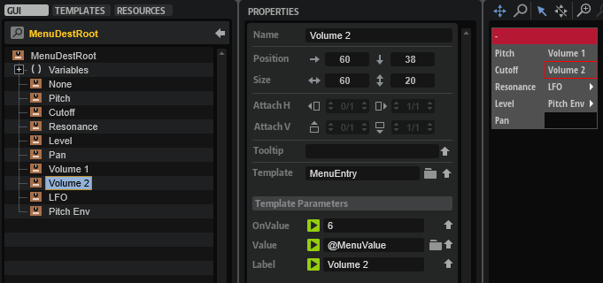
At this point in the tutorial, the new destinations should work with drag and drop and be selectable from the modulation matrix.
❕ If you want to learn more about multi-level pop-up menus, see Custom Multi Level Menus II.
Adding an Additional Source
The page tabs labeled LFO 1, LFO 2 and PITCH ENV give you access to the controls for these modulation sources. They also work as Drag Group controls. You can drag the page tabs to assign the modulation sources to modulation destinations. Let's add the user envelope as an additional source to see how this works.
Adjusting the Page Tabs
You need to adjust the position and size of the current page tabs before adding another page tab.
- In the Macro Page Designer, go to the GUI Tree and navigate to the Page Tabs branch.
- Select the LFO 1 group and set the following properties:
Properties
| Property | Value |
|---|---|
| Position X | 0 |
| Width | 115 |
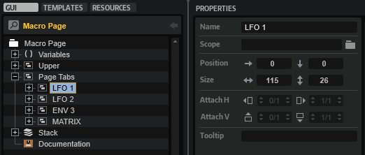
- Select the LFO 2 group and set the following properties:
Properties
| Property | Value |
|---|---|
| Position X | 118 |
| Width | 115 |
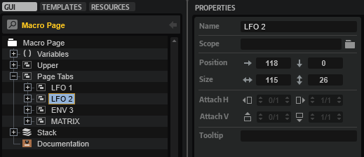
- Select the ENV 3 group and set the following properties:
Properties
| Property | Value |
|---|---|
| Position X | 236 |
| Width | 115 |
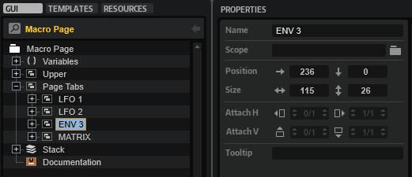
- Select the MATRIX group and set the following properties:
Properties
| Property | Value |
|---|---|
| Position X | 472 |
| Width | 115 |
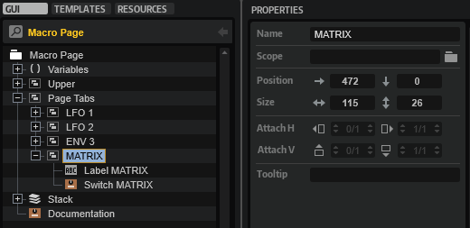
Adding the User Env Page Tab and Drag Group
- Select the ENV 3 group and duplicate it. Set the properties of the duplicate as follows:
Properties
| Property | Value |
|---|---|
| Name | ENV 4 |
| Position X | 354 |
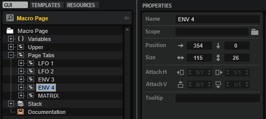
- Select ENV 4 > Stack_4 > Drag_3 > Drag Group_3 and set Drag Info to "ENV4".
Properties
| Property | Value |
|---|---|
| Drag Info | ENV4 |
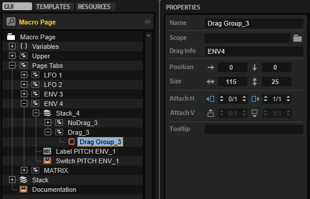
- Select ENV 4 > Label PITCH ENV_1 and set the properties as follows:
Properties
| Property | Value |
|---|---|
| Name | Label USER ENV |
| Text | USER ENV |
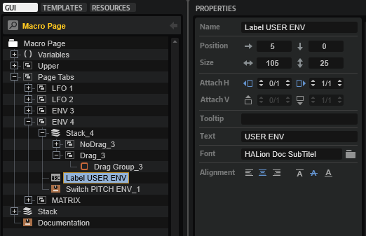
- Select ENV 4 > Switch PITCH ENV_1 and set the properties as follows:
Properties
| Property | Value |
|---|---|
| Name | Switch USER ENV |
| OnValue | 3 |
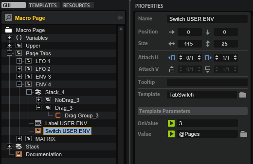
- Select ENV 4 > MATRIX > Switch MATRIX and set the properties as follows:
Properties
| Property | Value |
|---|---|
| OnValue | 4 |
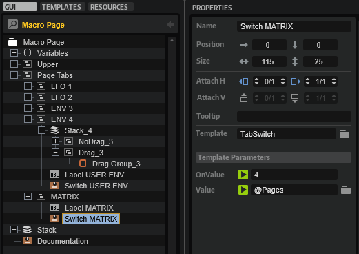
- Select Variables > Pages and set the Maximum to 4.
Properties
| Property | Value |
|---|---|
| Maximum | 4 |
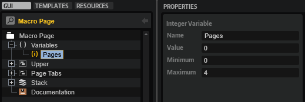
Adding the User Envelope Controls
- Navigate to Stack > Goup PITCH ENV. Duplicate Group PITCH ENV and rename it to "Group USER ENV".
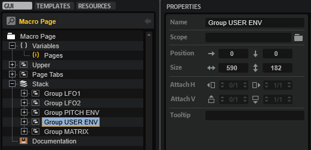
- In the Group USER ENV, connect the Value of each control template to the following zone parameters:
| Template | Value | Zone Parameter |
|---|---|---|
| Init_1 | @0:Layer/@0:Zone/@id:ea | UserL0Offset |
| Attack_1 | @0:Layer/@0:Zone/@id:e6 | UserAttOffset |
| Att Level_1 | @0:Layer/@0:Zone/@id:eb | UserL1Offset |
| Decay_1 | @0:Layer/@0:Zone/@id:e7 | UserDecOffset |
| Sustain_1 | @0:Layer/@0:Zone/@id:e8 | UserSusOffset |
| Release_1 | @0:Layer/@0:Zone/@id:e9 | UserRelOffset |
| Rel Level_1 | @0:Layer/@0:Zone/@id:ec | UserLROffset |
| Velocity_1 | @0:Layer/@0:Zone/@id:8001e | User Env.VelocityToLevel |
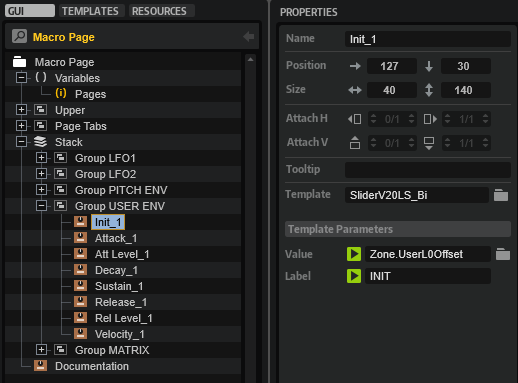
The controls on the USER ENV page are now connected to the user envelope.
❕ In the Example VST Preset, the times and levels of the pitch and user envelopes are already set up to work correctly when using the envelope offset parameters of the zone.
Adding the User Envelope to the UI Script
The translateModSource function in the UI script determines which source is being dropped.
- Open the UI script in the internal script editor and add the condition marked with a comment.
function translateModSource(str)
-- The return values match the modulation sources in the MIDI script.
if str == "LFO1" then return 2 end
if str == "LFO2" then return 3 end
if str == "ENV3" then return 4 end
if str == "ENV4" then return 5 end -- Add this condition.
return 1
end
The string "ENV4" must match the Drag Info of the Drag Group control. See Adding the User Env Page Tab and Drag Group. The return value must match the index of the User Env source in the sources table in the MIDI script. See Adding the User Env to the MIDI Script. The Drag Info and the associated return value define the source that is being dropped and then assigned in the modulation matrix.
Adding the User Envelope to the MIDI Script
You must add the User Env to the sources table in the MIDI script. Otherwise, you will not be able to assign it.
- Go to the Program Tree and select the Mod Matrix MIDI Module.
- Open the MIDI script in the internal script editor and add the line marked with a comment.
sources = {
{ name = "-" , src = ModulationSource.unassigned },
{ name = "LFO 1" , src = ModulationSource.lfo1 },
{ name = "LFO 2" , src = ModulationSource.lfo2 },
{ name = "Pitch Env" , src = ModulationSource.pitchEnv },
{ name = "User Env" , src = ModulationSource.userEnv }, -- Add this line.
{ name = "Key Follow" , src = ModulationSource.keyFollow },
{ name = "Velocity" , src = ModulationSource.noteOnVelocity},
{ name = "Pitch Bend" , src = ModulationSource.pitchBend },
{ name = "Mod Wheel" , src = ModulationSource.modWheel },
{ name = "Aftertouch" , src = ModulationSource.aftertouch },
}
Adding the User Envelope to the Source Menu
To make the User Env selectable in the modulation matrix, you must add it to the MenuSourceRoot template. The MenuSourceRoot template is a Custom Multi Level Menu with a MenuEntry template for each source. The MenuSourceRoot template pops up when you click the SourceMenu template. The SourceMenu template is part of the MatrixRow template which is part of the Template List that creates the rows and controls for the modulation matrix.
A source gets selected through the UI variable @MenuValue. MenuValue is a script parameter defined in the UI script of the MenuSourceRoot template. Basically, MenuValue is a variable for the selected source. It is exported and set by the Source1 or the Source2 template parameter of the Template List that creates the modulation matrix. MenuValue is also connected to the exclusive switch and the Label control within the MenuEntry template. The exclusive switch controls whether an entry is displayed as selected or not, and the Label control displays the name of the selected source.
The OnValue of the MenuEntry template corresponds to the index in the sources table as previously defined in the MIDI script. However, the index of OnValue starts at zero. Therefore, OnValue is always one number below the index of the corresponding source in the sources table.
Together, MenuValue and OnValue control which source is selected and displayed.
Editing the MenuSourceRoot Template
- Go to the Templates Tree, navigate to library > Tutorial Controls > Popup > MenuSourceRoot and edit the template.
- Select the Aftertouch template and set its properties and template parameters as follows:
Properties
| Property | Value |
|---|---|
| Position X | 0 |
| Position Y | 171 |
Template Parameters
| Template Parameter | Value |
|---|---|
| OnValue | 9 |
| Value | @MenuValue |
| Label | Aftertouch |
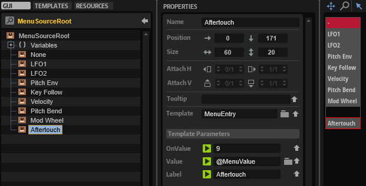
- Select the Mod Wheel template and set its properties and template parameters as follows:
Properties
| Property | Value |
|---|---|
| Position X | 0 |
| Position Y | 152 |
Template Parameters
| Template Parameter | Value |
|---|---|
| OnValue | 8 |
| Value | @MenuValue |
| Label | Mod Wheel |
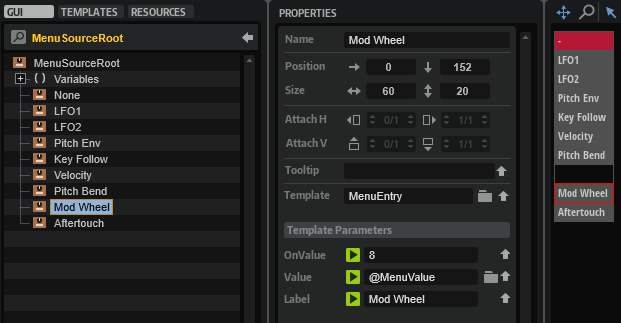
- Select the Pitch Bend template and set its properties and template parameters as follows:
Properties
| Property | Value |
|---|---|
| Position X | 0 |
| Position Y | 133 |
Template Parameters
| Template Parameter | Value |
|---|---|
| OnValue | 7 |
| Value | @MenuValue |
| Label | Pitch Bend |
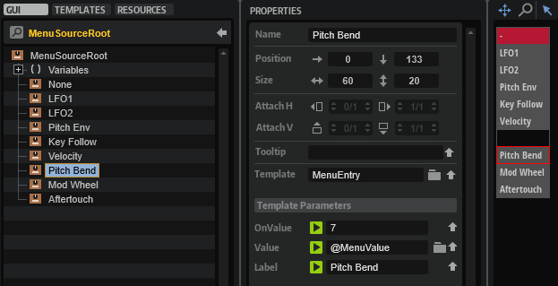
- Select the Velocity template and set its properties and template parameters as follows:
Properties
| Property | Value |
|---|---|
| Position X | 0 |
| Position Y | 114 |
Template Parameters
| Template Parameter | Value |
|---|---|
| OnValue | 6 |
| Value | @MenuValue |
| Label | Velocity |
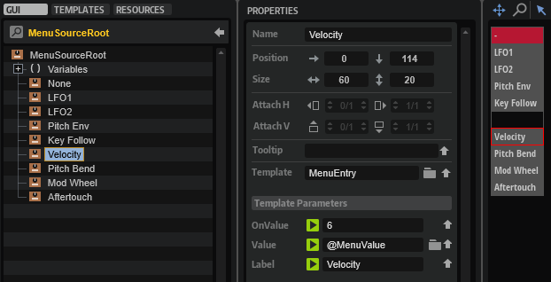
- Select the Key Follow template and set its properties and template parameters as follows:
Properties
| Property | Value |
|---|---|
| Position X | 0 |
| Position Y | 95 |
Template Parameters
| Template Parameter | Value |
|---|---|
| OnValue | 5 |
| Value | @MenuValue |
| Label | Key Follow |
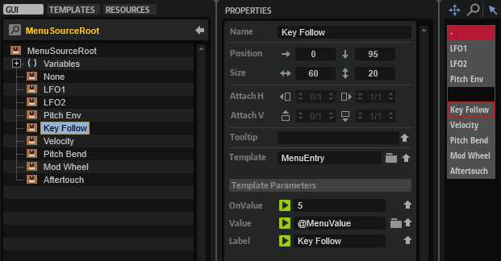
- Duplicate the Pitch Env template, then rename the duplicate to "User Env" and set its properties and template parameters as follows:
Properties
| Property | Value |
|---|---|
| Name | User Env |
| Position X | 0 |
| Position Y | 76 |
Template Parameters
| Template Parameter | Value |
|---|---|
| OnValue | 4 |
| Value | @MenuValue |
| Label | User Env |
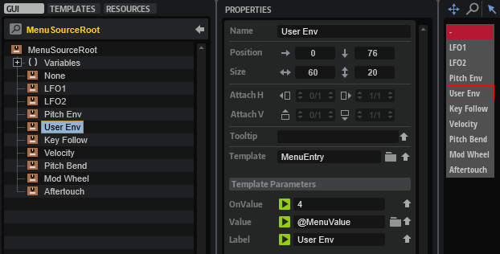
At this point in the tutorial, the new source should work with drag and drop and be selectable from the modulation matrix.
❕ If you want to learn more about multi-level pop-up menus, see Custom Multi Level Menus II.
Increasing the Number of Rows in the Modulation Matrix
Each time you drag a source to a destination, the findEmptyMatrixRow function in the UI script checks if there is an empty row available in the modulation matrix. If there aren't any free rows available, the CanDragMod variable in the UI script will be false and you won't be able to drag and drop sources. You'll see a symbol appear before the sources that lets you know. CanDragMod is connected to the Stack control of each page tab. Depending on CanDragMod the Stack switches between the symbol, dragging is not allowed, and the Drag Group, dragging is allowed. The Stack also changes the tooltips that give instructions.
- Drag and drop at least four sources to make the symbol appear. You won't be able to drag and drop further sources.
The current number of modulation rows is four. To avoid running out of modulation rows too early, let's increase the number of modulation rows to eight.
- Open the UI script in the internal script editor and set the
numRowsvariable to 8.
local numRows = 8
- In the GUI Tree, navigate to Stack > Group MATRIX > Template List. Activate the V-Scroll Style.
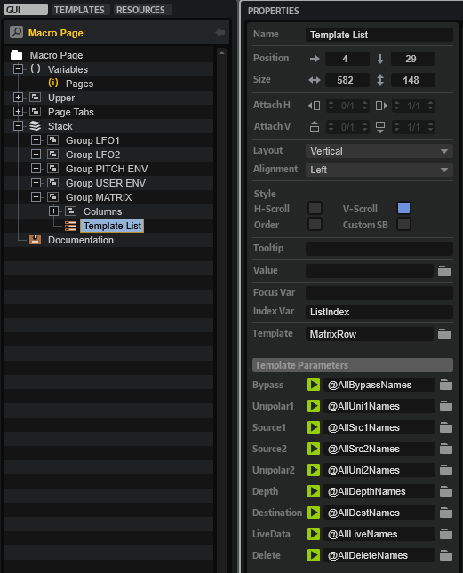
The modulation matrix now has 8 rows, accessible via a vertical scrollbar.
The parameters for the modulation matrix are defined in the UI script by calling the defineAllRowNamesParameter function. The defined parameters are connected to the template parameters of the Template List. The Template List creates the number of rows in the matrix equal to the number of values specified for each parameter.
Display Depth in Semitones or Percent
Depending on whether or not Pitch has been assigned as a destination, the Depth parameter displays values either in semitones or in percent. Which of the two is displayed is controlled by a UI script that is embedded in the DepthSliderHorizontal template. The script defines a DestIndex parameter that is exported as a template parameter and is responsible for deciding whether the values are displayed as semitones or percent, depending on the selected destination. Currently, Pitch is the only destination that needs to display semitones. If there are other destinations that need to display semitones, you will need to add them to the isPitchDest table of the template's UI script. Have a look at the comments in the code below for details.
pitchRange = 60
pitchStretch = 3.1336
-- A table with all destinations that display their depth in semitones.
-- The indices in the isPitchDest table must match the indices of the pitch destinations
-- as previously defined in the destinations table in the MIDI script.
isPitchDest = {
[1] = true, -- Pitch
}
function sinh(x)
return (math.exp(x) - math.exp(-x)) / 2
end
function asinh(x)
return math.log(x + math.sqrt(x * x + 1))
end
function onDepthChanged()
-- Convert from depth to semitones if the destination uses pitch.
if isPitchDest[DestIndex] then
Text = pitchRange * sinh(pitchStretch * 0.01 * Depth) / sinh(pitchStretch)
else
Text = Depth
end
end
function onTextChanged()
-- Convert from semitones to depth if the destination uses pitch.
if isPitchDest[DestIndex] then
Depth = 100 * asinh(Text * sinh(pitchStretch) / pitchRange) / pitchStretch
else
Depth = Text
end
end
defineParameter("Depth", "", 0, -100, 100, 0.1, onDepthChanged)
defineParameter("Text", "", 0, -100, 100, 0.1, onTextChanged)
defineParameter("DestIndex", "", 0, 0, 1000, 1, onDepthChanged)
To edit the UI script of the DepthSliderHorizontal template:
- Go to the Templates Tree, navigate to Tutorial Controls > Matrix > DepthSliderHorizontal and edit the template.
- Click Edit Script to open the internal script editor.
- Add further destinations to the
isPitchDesttable. The indices in theisPitchDesttable must match the indices of the pitch destinations as previously defined in thedestinationstable in the MIDI script.
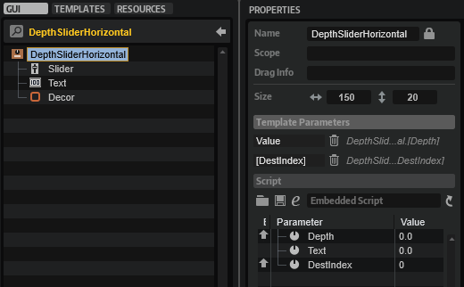
Adding User Envelope Destinations
The parameters of the pitch envelope already exist as modulation destinations. Let's add the parameters of the user envelope as modulation destinations.
Adding the User Envelope to the MIDI Script
You need to add the parameters of the User Envelope to the destinations table in the MIDI script.
- Go to the Program Tree and select the Mod Matrix MIDI Module.
- Open the MIDI script in the internal script editor and append the following lines to the
destinationstable.
{ name = "User Env Init Level" , dest = ModulationDestination.userEnvStartLev },
{ name = "User Env Attack" , dest = ModulationDestination.userEnvAttack },
{ name = "User Env Att Level" , dest = ModulationDestination.userEnvAttLev },
{ name = "User Env Decay" , dest = ModulationDestination.userEnvDecay },
{ name = "User Env Sustain" , dest = ModulationDestination.userEnvSustain },
{ name = "User Env Release" , dest = ModulationDestination.userEnvRelease },
{ name = "User Env Rel Level" , dest = ModulationDestination.userEnvRelLev },
Adding the User Envelope to the Destination Menu
You need to add the User Envelope parameters to the MenuDestRoot template to make them selectable as destinations in the modulation matrix. As with the Pitch Envelope, we want the User Envelope destinations to be in a submenu. The MenuDestRoot template uses the SubMenuEntry template and a Popup List Variable to accomplish this.
- Go to the Templates Tree, navigate to library > Tutorial Controls > Popup > MenuDestRoot and edit the template.
- Select the Pitch Env template and duplicate it, then rename the duplicate to "User Env" and set its properties and template parameters as follows:
Properties
| Property | Value |
|---|---|
| Name | User Env |
| Position X | 60 |
| Position Y | 95 |
Template Parameters
| Template Parameter | Value |
|---|---|
| OnValue | 3 |
| Value | @PopupVar |
| Label | User Env |
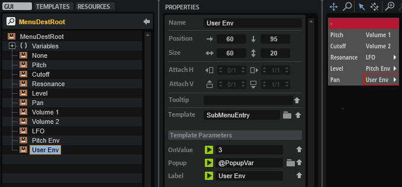
- Navigate to Variables > PopupVar and add "MenuDestUserEnv" to the Popup List Variable.
The entries in the Popup List Variable correspond to the names of the templates to be opened when navigating through the menu.
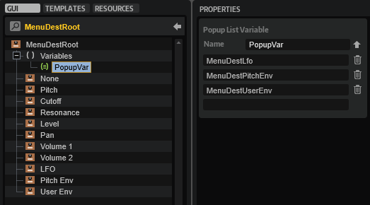
- Go back to the Templates Tree and navigate to library > Tutorial Controls > Popup. Duplicate the MenuDestPitchEnv template and rename the duplicate to "MenuDestUserEnv".
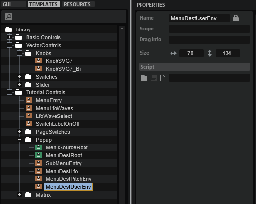
- Edit MenuDestUserEnv and set the OnValue of the contained control templates as follows:
| Template | OnValue |
|---|---|
| Init Level | 19 |
| Attack | 20 |
| Att Level | 21 |
| Decay | 22 |
| Sustain | 23 |
| Release | 24 |
| Release Level | 25 |
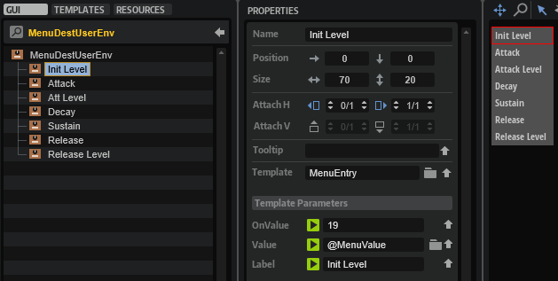
The Value and Label template parameters for each control template are already set correctly.
At this point in the tutorial, the User Envelope destinations should be selectable from the modulation matrix.
❕ If you want to learn more about multi-level pop-up menus, see Custom Multi Level Menus II.
Final Example VST Preset
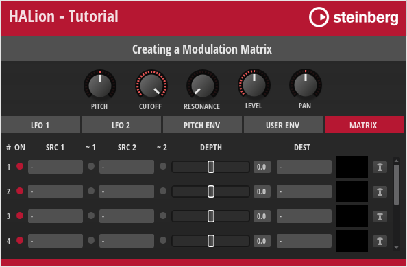
Here, you can find the Example VST Preset with all the editing steps applied.
How the Elements Interact
With the previous tutorial, we wanted to give you an idea of how to customize a modulation matrix to suit your particular instrument. In the following section, you can find a brief description of the connections and the exchange of messages between the various templates and the UI and MIDI scripts.
The UI script plays a central role in the modulation matrix and controls most of the actions. The comments in the UI script explain which UI elements are connected to script parameters and why they are needed. Reading the comments and looking at the associated UI elements will help you to understand how the modulation matrix works. The following screenshot shows the Template List, which creates the rows and controls for the modulation matrix, with its template parameters linked to the parameters of the UI script. These script parameters are defined in the defineAllRowNamesParameter function. They control which zone parameters are connected to the modulation matrix and can be adjusted from there.
Drag and Drop Handling
When dropping a page tab of a source to a destination, the corresponding drop parameter is changed and the change callback calls the addModRow function.
-- The destination index must match the modulation destinations in the MIDI script.
defineParameter("DropPitch", nil, "", function() addModRow(DropPitch, 2) end)
defineParameter("DropCutoff", nil, "", function() addModRow(DropCutoff, 3) end)
defineParameter("DropResonance", nil, "", function() addModRow(DropResonance, 4) end)
defineParameter("DropLevel", nil, "", function() addModRow(DropLevel, 6) end)
defineParameter("DropPan", nil, "", function() addModRow(DropPan, 8) end)
The addModRow function has the Drag Info of the source and the index of the destination as arguments. The two arguments are used to create the assignment in the next available row of the modulation matrix.
function addModRow(srcstr, dest)
local row = findEmptyMatrixRow()
local src = translateModSource(srcstr)
if row then
local rowname = "ModRow"..row
startUndoBlock("Add Modulation Source")
midiModule:setParameter(rowname.."_Src1", src)
midiModule:setParameter(rowname.."_Dest", dest)
endUndoBlock()
end
end
The findEmptyMatrixRow function called in the addModRow function checks if there is an empty row available in the modulation matrix and returns its index. It returns nil if no empty row is available.
function findEmptyMatrixRow()
for r = 1,numRows do
local rname = "ModRow"..r
if midiModule:getParameter(rname .. "_Src1") == 1 and midiModule:getParameter(rname .. "_Src2") == 1 then
return r
end
end
return nil
end
The translateModSource function called in the addModRow function uses the Drag Info to return the index of the modulation source that is being dropped.
function translateModSource(str)
-- The return values must match the index of the modulation sources in the MIDI script.
if str == "LFO1" then return 2 end
if str == "LFO2" then return 3 end
if str == "ENV3" then return 4 end
if str == "ENV4" then return 5 end
return 1
end
The instructions inside the if statement of the addModRow function set the source and destination parameters of the MIDI script, which in turn assigns the modulation.
When assigning sources and destinations using the menus in the modulation matrix or via drag and drop, the MIDI script sets the AnySourceChanged parameter of the UI script, which calls the onAnySourcechanged function, which in turn checks if there are still rows available in the modulation matrix. If no free rows are available, the CanDragMod variable will be false and you will not be able to drag and drop sources.
function onAnySourceChanged()
CanDragMod = findEmptyMatrixRow() ~= nil
end
defineParameter{name = "AnySourceChanged", default=0, min=0, max=100, increment=1, onChanged=onAnySourceChanged}
defineParameter{name = "CanDragMod", default=true}
CanDragMod = findEmptyMatrixRow() ~= nil
❕ Checking for empty modulation rows will only work if the
AnySourceChangedparameters are connected.
Reset Modulation Row
The UI script contains also a function for resetting a modulation row. It is called when the trash bin icon of a row is clicked.
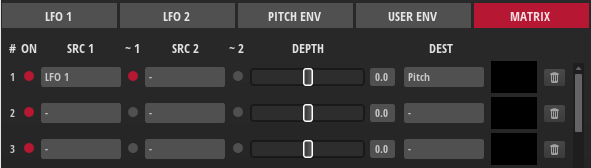
function onDeleteRow(r)
if _G["ModDelete" .. r] == 0 then
return
end
local row = zone:getModulationMatrixRow(r)
if not row then
return
end
startUndoBlock("Delete Modulation Row " .. r)
local rowname = "ModRow"..r
midiModule:setParameter(rowname.."_Src1", 1)
midiModule:setParameter(rowname.."_Src2", 1)
midiModule:setParameter(rowname.."_Dest", 1)
row:setParameter("Destination.Depth", 0)
row:setParameter("Destination.Bypass", false)
endUndoBlock()
end
Defining Modulation Sources and Destinations in the MIDI Script
The modulation sources and destinations that you need for your instrument must be defined in the sources and destinations tables of the MIDI script. The tutorial above described that the settings for the Custom Multi Level Menus must match the definitions of the sources and destinations in the MIDI script.
When loading the MIDI script, the defineAllModParameters function is called.
function defineAllModParameters()
for r = 1,ModRows do
local rname = "ModRow"..r
defineParameter{name=rname.."_Src1", default=1, strings=sourceNames, automatable=false, onChanged=function() sourceChanged(r, 1) end}
defineParameter{name=rname.."_Src2", default=1, strings=sourceNames, automatable=false, onChanged=function() sourceChanged(r, 2) end}
defineParameter{name=rname.."_Dest", default=1, strings=destNames, automatable=false, onChanged=function() destChanged(r) end}
end
end
The function defines the parameters that select the two modulation sources and the destination for each row. The parameters provide the sources and destinations as defined in the associated tables.
When a source is selected, the sourceChanged function is called, which sets either source 1 or source 2 in the specified row. The row and source are specified by the function's arguments.
function sourceChanged(row, unit)
local srcname = "ModRow"..row.."_Src"..unit
local src = _G[srcname]
local mrow = zone:getModulationMatrixRow(row)
if mrow and unit == 1 then
mrow:setSource1(sources[src].src, sources[src].info, sources[src].info2)
mrow:setParameter("Source1.Polarity", def_unipolar[sources[src].src] and 0 or 1)
elseif mrow and unit == 2 then
mrow:setSource2(sources[src].src, sources[src].info, sources[src].info2)
mrow:setParameter("Source2.Polarity", def_unipolar[sources[src].src] and 0 or 1)
end
AnySourceChanged = (AnySourceChanged + 1) % 100
end
Depending on the selected source, the sourceChanged function sets the polarity to either unipolar or bipolar. The def_unipolar table defines the sources that are usually unipolar. All other sources will be set to bipolar when they are selected.
def_unipolar = {
[ModulationSource.unassigned] = true,
[ModulationSource.ampEnv] = true,
[ModulationSource.filterEnv] = true,
[ModulationSource.noteOnVelocity] = true,
[ModulationSource.modWheel] = true,
[ModulationSource.aftertouch] = true,
[ModulationSource.midiControl] = true,
[ModulationSource.noteExpression] = true,
}
Finally, the sourceChanged function increases the AnySourceChanged parameter by one. This parameter must be connected to the identically named parameter of the MIDI script which calls the onAnySourcechanged function, which in turn checks if there are still rows available in the modulation matrix. See Drag and Drop Handling for details.
When a destination is selected, the destChanged function is called, which assigns the destination to the specified row.
function destChanged(row)
local destname = "ModRow"..row.."_Dest"
local mrow = zone:getModulationMatrixRow(row)
if mrow then
mrow:setParameter("Destination.Destination", destinations[_G[destname]].dest)
end
end
Modulation Matrix Examples for Different Zone Types
In the How-tos section, you can find modulation matrix examples for each zone type that you can use as a basis when creating a modulation matrix for an instrument. See Modulation Matrix for FM Zones, Modulation Matrix for Grain Zones, Modulation Matrix for Sample Zones, Modulation Matrix for Spectral Zones, Modulation Matrix for Synth Zones, and Modulation Matrix for Wavetable Zones.
Transferring the Modulation Matrix to Your Instrument
To integrate the moduation matrix into your macro page, you need to do the following:
- Copy all templates. The templates in the Example VST Preset use Resources from the Basic Controls and Vector Controls library. In a later step, you can change these resources to match the look of your instrument.
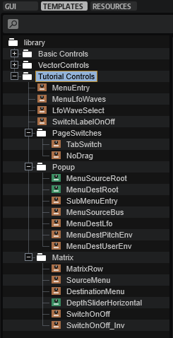
- Copy the templates from the GUI Tree of the example VST preset to your macro page.
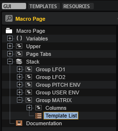
- Copy the code from the UI and MIDI scripts to the respective scripts of your instrument.
- Connect the
AnySourceChangedparameter of the MIDI script with theAnySourceChangedparameter of the UI script.
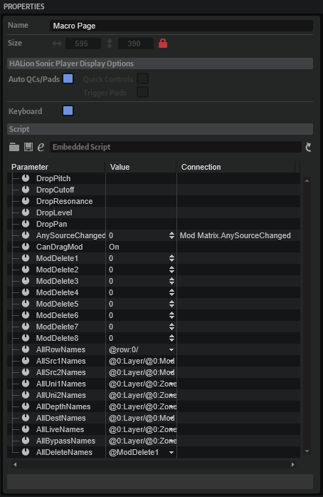
❕ Checking for empty modulation rows will only work if the
AnySourceChangedparameters are connected.
- Finally, update the UI, for example, by selecting a different program and then selecting your instrument again. This will rebuild the macro page and apply your changes.
Modulation Matrix with Custom Look
You can customize the look and feel of your instrument entirely by using your own Resources. As an example, the modulation matrix of FM Lab is shown in the following screenshot.
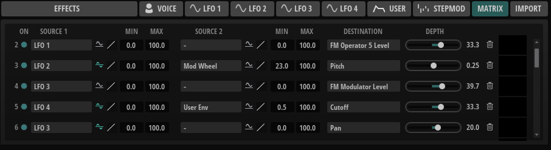